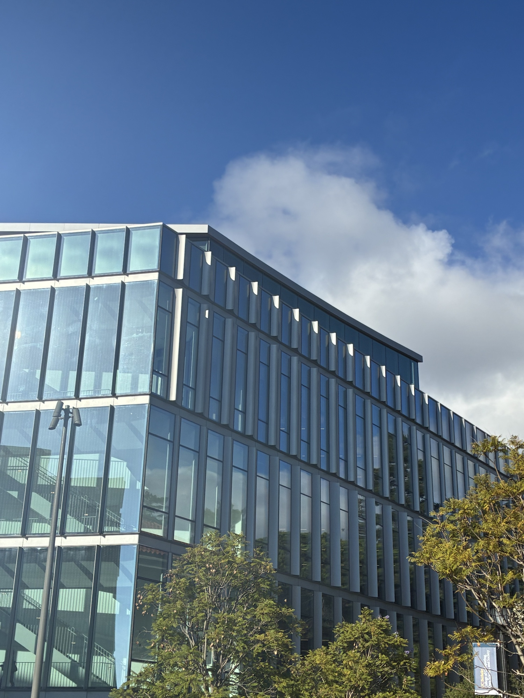
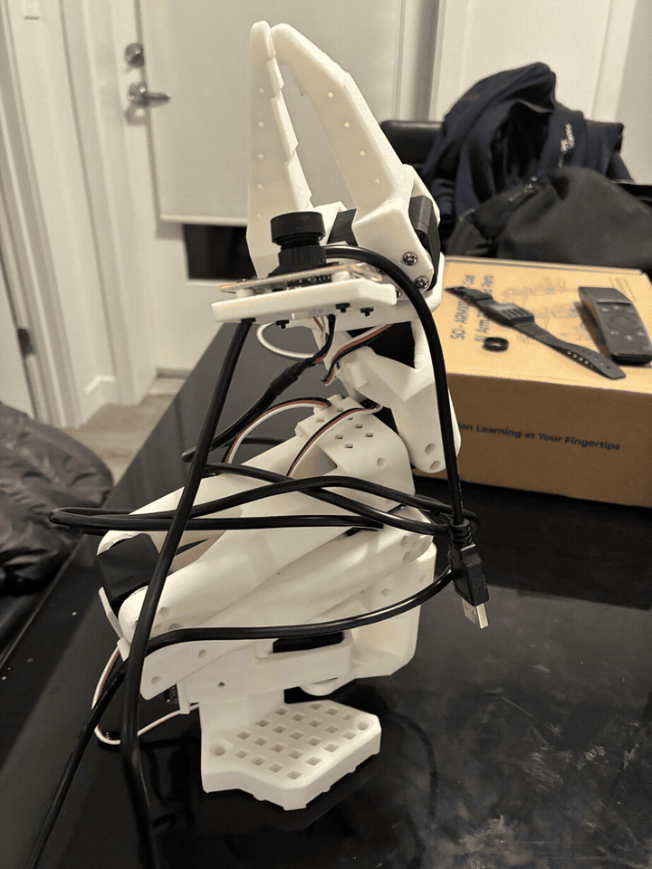
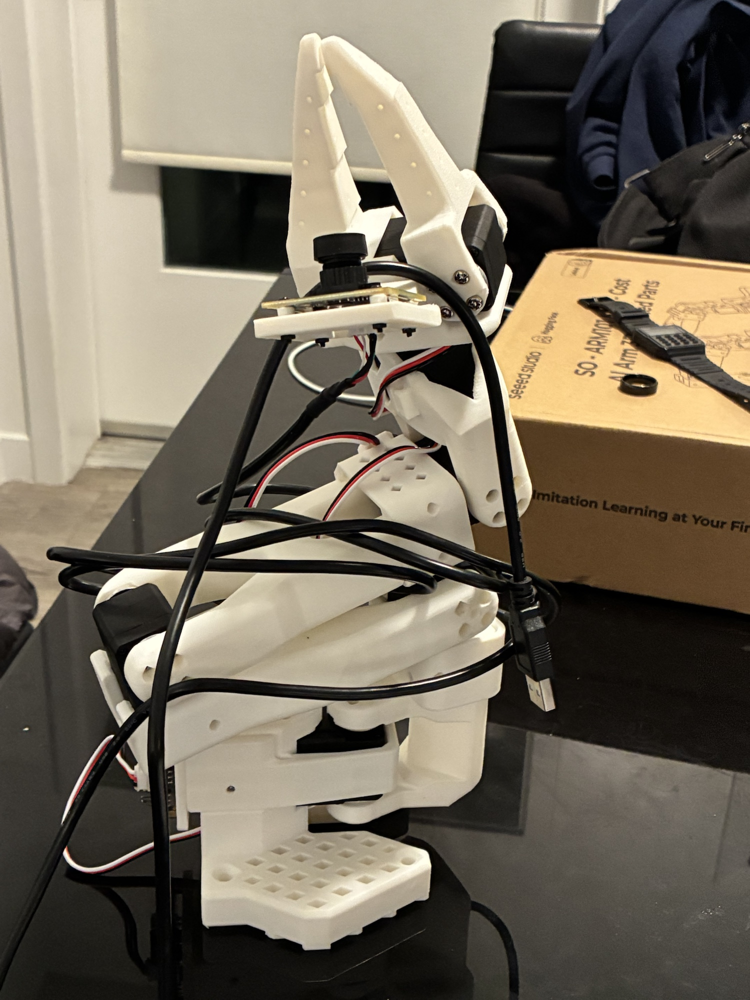

CS 180 · Project 0 · Fall 2026
Becoming Friends with My Camera
A short exploration of how camera position and focal length affect perspective.
Part 1: Selfie — The Wrong Way vs. The Right Way
In the close-up photo, the center of the face is much closer to the camera than the sides, so features like the nose appear exaggerated. Moving farther away reduces those relative depth differences. Zooming in restores similar framing while keeping the more natural-looking proportions.
Part 2: Architectural Perspective Compression

From farther away, the differences in depth across the building are small compared with the total camera distance, so the scene looks flatter and more compressed. From closer up, nearby parts of the scene appear larger relative to distant parts, creating a stronger sense of depth.
Part 3: The Dolly Zoom


I moved the camera backward while zooming in, trying to keep the main subject about the same size in every frame. The changing camera position alters the perspective while the zoom compensates for the subject's size, making the background appear to move around it.